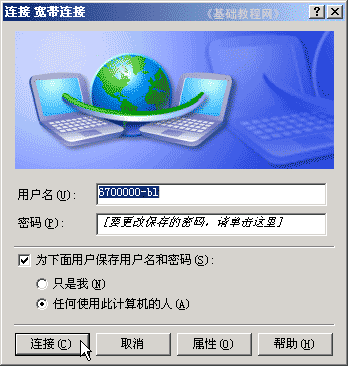

电脑操作基础
二十、连接上网 返回
在电信或铁通、网通办理宽带业务后，会得到一个上网的帐号和密码，然后就可以用这个帐号连接到互联网上了；
1、创建新连接
1）点“开始－所有程序－附件－通讯－新建连接向导”，注意细心一步一步；
2）在欢迎面板点“下一步”按纽继续；
3）在出来的连接类型中，点下一步继续，这儿默认的就是“连接到Internet(C)”；
4）在接下来的怎样连接面板中，选择第二个“手动设置”，点“下一步”按纽继续；
5）在接下来的连接方式中，也选择第二个“用要求用户名和密码的宽带连接”；
6）接下来的连接名称里，输入一个名称，例如 “宽带连接” ，这儿只是一个名称；
7）在接下来的用户名和密码中，输入在电信或铁通办理业务时得到的帐号和密码，密码要输两遍，然后点“下一步”继续；
8）在接下来的完成面板中，勾选上“在我的桌面添加一个快捷方式”，点完成按纽结束；
9）然后桌面上就有一个快件捷方式，双击后点“连接”按纽就可以进行连网；

本节学习了在WinXP中创建上网连接的基本方法，如果你成功地完成了练习，请继续学习下一课内容；
本教程由86团学校TeliuTe制作|著作权所有
基础教程网：http://teliute.org/
美丽的校园……
转载和引用本站内容，请保留作者和本站链接。